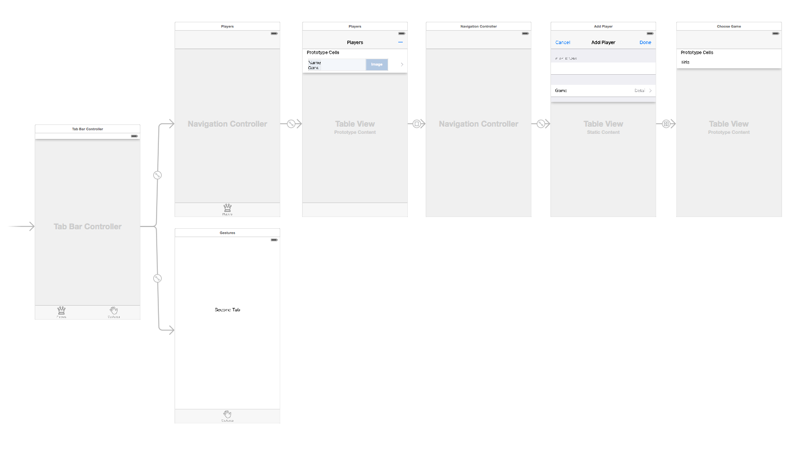
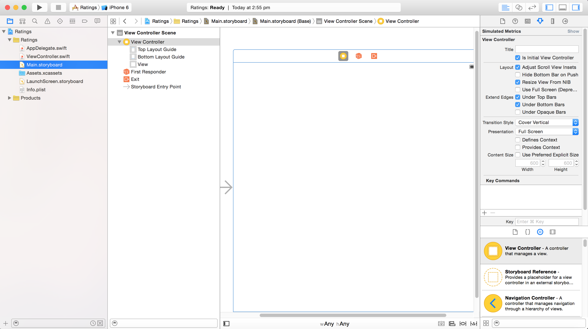
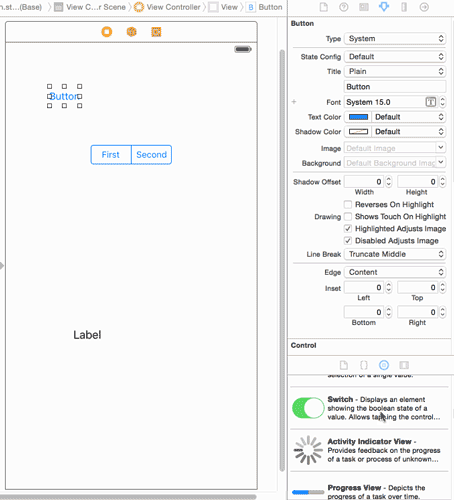
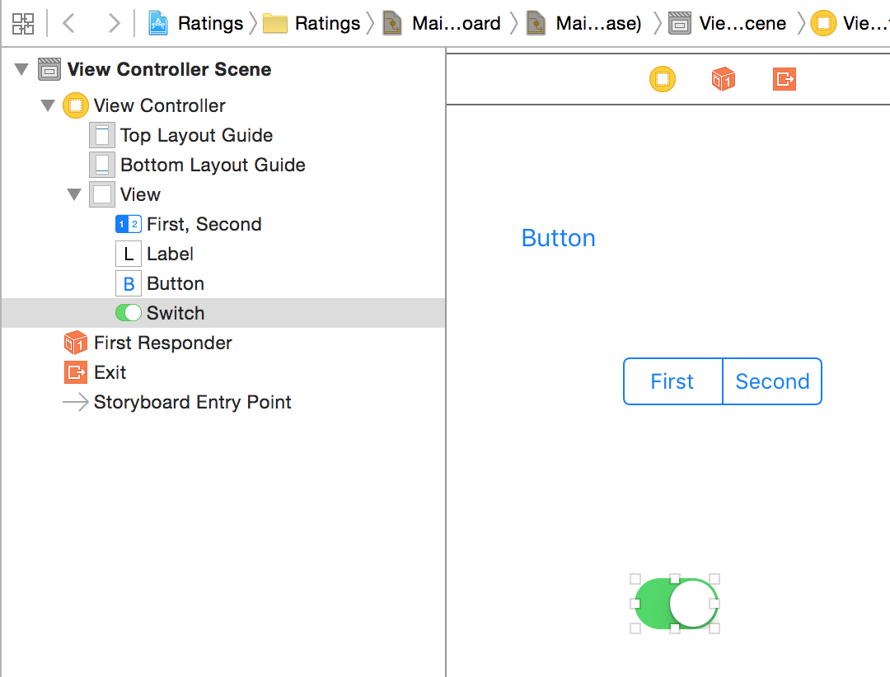
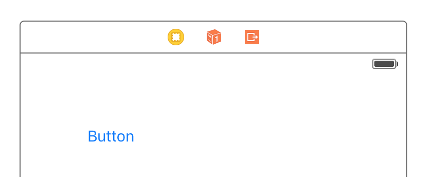
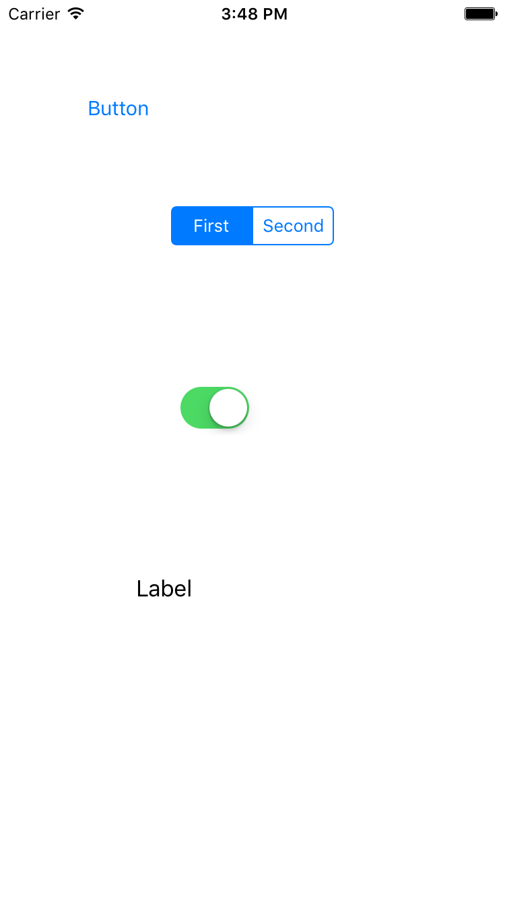

按照以下方式填写：
原帖由导师小组的Matthijs Hollemans 发布。
Storyboards 是在iOS5的时候出现的一个新功能，它帮助我们在构建界面时节省了很多的时间。
我用一张图来展示什么是Storyboards，这就是你将要在这个教程里构建的Storyboards。

你可能不清楚这个app是做什么的，但你可以很清楚的看到app的各个screen和他们之间的连接关系。
Storyboards有以下几个优点：
* 你可以在视觉上很直观的布局你view controllers中的各个场景并且表现他们之间的连接。通过stroryboard你会对你app中的各个场景有更好的概念。
* Stroyboards还可以表现场景间的跳转。这个跳转被称为’segues’,你可以通过在stroryboard中连接view controllers来创建‘sugeus’。通过它你就可以在UI上少写点代码啦。
* 在Storyboards中使用table view会简单很多。有了tableview 的prototype cells和static cells功能，你基本上就可以在stroryboard的编辑栏里来设计你的tableview了，减少了很多你原来不得不写的代码。
* Storyboards在使用Auto Layout上也简单很多。Auto Layout定义了你页面中各个UI的位置和大小，有了这个强大的功能，你在适配不同大小的屏幕时就简单多了。在这个教 程中，你只会使用用一点点Auto Layout，但是在这个教程外，你可以通过[Auto Layout Tutorial](https://www.raywenderlich.com/?p=%2083129)或者[watch the video series](http://www.raywenderlich.com/video-tutorials#autolayout)来了解更多的内容。
在本教程中你将要创建一个简单的app，这个app可以添加有关选手，比赛和他们技能水平的列表。在这项任务中，你会学到一些在stroryboards中常用的功能。
打开Xcode创建一个新项目，选择Single View Application模板。
按照以下方式填写：
* Product Name: **Ratings**
* Organization Name: 随便填啥
* Organization Identifier: 你apps使用的identifier
* Language: **Swift**
* Devices: **iPhone**
* Use Core Data: 不勾
* Include Unit Tests and UI Tests: 不勾
创建好项目之后，Xcode的主要界面应该看上去是这样的：

这个新的项目包含了两个类，AppDelegate和ViewController以及本教程的重点Main.storyboard。
这个app只支持竖直，所以去掉上图显示的Landscape Left和Landscape Right前面的勾。
然后让我们来看一下storyboard吧。点击导航栏中的Main.storyboard。

view controller在stroryboard中的官方术语叫做’scene‘，但是你可以互换这些术语，在stroryboard中secne表现的就是view controller。
在上图中你看到了一个view controller包含了一个空白页面。左边的箭头表示这个view controller是这个stroryboard的初始view controller。
通过拖拽对象库里的控件（在右下角）到你的view controller中来设置页面。是不是很简单？
**注意**：你会发现默认的scene是方的。Xcode7默认开启了Auto Layout和Size Classes。这两个功能可以使你构建一个灵活的界面，并且很方便的调整大小。这对你适配不同大小的屏幕很有帮助。你可以在[Adaptive Layout video tutorial series](https://videos.raywenderlich.com/#adaptivelayout)了解更多有关size classes的内容。 在本教程中，你可以重新调整屏幕大小，方便你更直观的看到最终的界面是什么样子的。 在继续下面的内容之前，重新调整scene的大小来模拟iPhone6/6s。 在Document Outline中选中**View Controller**。如果你没看到的Document Outline的话，点击storyboard面板中左下角的这个按钮。  在**Simulated Metrics**下的**Attributes Insepector**改变**Size**为**iPhone 4.7 inch**

现在storyboard中的场景的大小就是iPhone6或者6s的大小了，也就是4.7英寸iphone的大小。
”Inferred“是**Simulated Metrics**的默认设置。**Simulated Metircs**是stroryboard内置的视觉设计辅助来展示屏幕的样子。请记住他们在运行的时候不会被使用。
拉取一些对象库里的控件到view controller来感受一下storyboard到底是怎么工作的吧。

当你拖进这个控件后，这个控件应该会显示在左边的Document Outline里：

storyboard显示你的view controllers里面所有的内容。目前这里只有一个view controller（也可称scene）在你的storyboard中，但在本教程的学习过程中你将会添加几个其他的view controller。
在scene的上方有个微型的Document Outline，这被称为Dock：

Dock显示scene中的顶级对象。每个scene至少有一个View Controller对象，一个First Responder对象，和一个Exit选项，当然它也可以有其他顶级对象。Dock可以很方便的连接outlets和actions。如果你要连接一些东西到这个view controller，只需要简单的将它拉取到Dock的图标上。
注意：你可能不是很常使用到**First Responder**。这是一个代理对象，指任何对象在任何给定时间都有第一个第一响应状态。举一个例子，你可以截取按钮对象的按下动作来调用First Responder的复制方法。如果一个文本框在响应状态了那么你就可以按下按钮来使First Responder（也就是文本框）复制文字。 运行这个app，它看上去应该跟你在stroyboard里设计的一样：
这是你定义的初始View Controller，但是这个app到底是怎么加载的呢？仔细看看application delegate来找到答案吧。打开AppDelegate.swift来看看代码：
```
import UIKit
@UIApplicationMain
class AppDelegate: UIResponder, UIApplicationDelegate {
var window: UIWindow?
func application(application: UIApplication, didFinishLaunchingWithOptions launchOptions: [NSObject: AnyObject]?) -> Bool {
// Override point for customization after application launch.
return true
}
文件顶部的**@UIApplicationMain**属性指定AppDelegate类是模块的入口。使用storyboard的要求是appdelegate继承自**UIResponder**并且有**UIWindow**属性。所有的方法几乎都是空白的，就连**application(_:didFinishLaunchingWithOptions:)**也只是简单地返回了true。
秘密藏在info.plist文件里。点击项目导航栏里的**Info.plist**你会看到：

使用Storyboard的app用**UIMainStoryboardFile**这个key，也可以称为”Main storyboard file base name“,来指定app启动时必须加载的stroyboard。当此设置存在时，**UIApplication**为加载相同名字的storyboard文件，自动实例化storyboard里的”Initial View Controller“，然后将controller的视图加到**UIWindow**里面 。
你也可你在通用栏和**Deployment Info**部分里看到这个项目设置。

下面就通过几个view controllers来创建一个真正的评分app吧。
## 添加到我的选项卡
你将要创建的评分app是一个带有两个屏幕的tab式app。通过stroryboard创建tab很容易。
回到**Main.storyboard**然后删除之前创建的view controller。可以通过点击Document Outline的**View Controller**，并点击删除键来完成。
拉取对象库里的**Tab Bar Controller**到我们的storyboard里。可以先最大化你的Xcode，因为**Tab Bar Controller**会附带两个view controller，你需要更多的空间来操作。双击屏幕就能放大或者缩小屏幕，或者屏幕来选择伸缩等级。
为了方便，再次改变模拟尺寸为iphone大小。方法同上面讲的一样。操作完了之后，附带的两个view controller的也会模拟iphoe6或6s的大小。

Tab Bar Controller 预先定义了两个额外的view controller，一个选项卡对应一个。因为**UITabBarController**包含了一个以上的view controller，所以也被称为**container view**。**Navigation Controller**和**Split View Controller**也是常见的容器。（你等会会用到Navigation Controller的）。
容器关系由Tab Bar Controller和view controller之间的箭头表现。特定的嵌入关系是由下图箭头中间可见的图标表示的。

> **注意**:如果你想要一起移动Tab Bar和它关联的view controller的话，缩小屏幕，选中所有的场景。那么你就可以一起移动它们了。（选中的场景会有一个很细的蓝边框。）
拉取一个label到第一个view controller（当前标题为“Item 1”），双击它，输入“First Tab”。同样的拉取一个label到第二个view controller（“Item 2”）然后输入“Second Tab”。这样你就能知道选项卡确实在切换了。
> **注意**:屏幕缩小的时候不能拉取控件，你需要先通过双击画面来恢复会屏幕的正常尺寸。
点击Build和Run，你会看到控制台输出一些类似的东西：
**Ratings[18955:1293100] Failed to instantiate the default view controller for UIMainStoryboardFile 'Main' - perhaps the designated entry point is not set?**
错误非常清晰，你没有设置一个entry point。意思就是你在删除之前的场景后没有设置新的初始控制器。为了解决这个问题，选中Tab Bar Controller，在**Attributes Inspector**。勾选**Is Initial View Controller**栏。

之前指向被删除的view controller的箭头现在应该指向Tab Bar Controller：

这就意味着当你运行app时，**UIApplication**会把Tab Bar Controller作为主屏幕。尝试运行一下app。现在这个app有个选项栏，你可以在选项卡上切换两个view controllers了。

> **小提示**：你可以直接拉取初始箭头到其他view controller来切换初始控制器。
Xcode实际上自带了一个选项卡式app模板（不出意外的就叫做”Tabber Application template“），但是了解它是如何创建出来也是挺好的，这样你就可以自己创建一个Tab Bar Controller了。
> **注意**：如果一个Tab Bar Controller连接了超过5个场景，它会自动生成一个**More...**选项卡，非常整洁。
## 加入Table View Controller
Tab Bar Controller现在连接的两个view controller是普通的**UIViewController**实例。现在你需要把第一个选项卡切换成**UITableViewController**。
在Document Outline里删除第一个view controller。在对象库里拉取一个新的**Table View Controller**到view controller原来的位置上。

现在将Table View Controller嵌套进navigation controller里。选中Table View Controller，依次选中Xcode菜单栏里的**Editor\Embed In\Navigation Controller**。这样就会加入一个新的controller：

你也可以从对象库里拉取Navigation Controller然后包裹tableview。但是通过嵌套命令能节省很多时间。
由于Navigation也是一个container view controller（就像Tab Bar Controller一样），他也有一个关系箭头指向Table View Controller。你可以在Document Outline里看到这种关系：

你会发现Table View Controller多了一个导航条，界面生成器自动创建了它因为现在这个场景现在会在Navigation Controller的框架下展示。这只是一个模拟对象，而并不是一个真正的**UINavigationBar**对象。Simulated Metrics 会推断场景，当场景在Navigation Controller里显示导航栏，当场景在Tab Bar Controller里显示选项条，等等。
新的controller现在又是方形的。将它包裹进Tab Bar Controller里这样它就会改变自己的尺寸来适配父场景。
按住ctrl键并按住鼠标，从Tab bar Controller拉到Navigation Controller来连接两个场景。当你松开鼠标后，一个小的弹出菜单出现了，选择**Relationship Segue - view controllers**选项：

这样我们就在两个场景之见连成线了。这也是一个包含关系，跟Tab Bar Controller包含其他控制器一样。
Tab Bar Controller现在有两个嵌套关系了。一个是选项卡的关系。Navigation Controller和Table View Controller之间也是一个嵌套关系。
但你创建了这个新的连接之后，Tab Bar Controller多了一个”Item“选项。对于这个app，你想把这个新的场景作为第一个选项栏，所以拖动tab来改变它们的顺序：

试着运行一个app，现在第一个选项栏包含一个包裹在navigation controller里面的tableview controller。

在你加入一个功能之前，你需要先清理一下stroyboard。将第一个选项栏命名为”Players“，第二个命名为”Gestures“。不要在Tab Bar Controller上修改名字，在与这些选项相连的view controller上修改。
一旦你连接view controller到Tab Bar Controller上，它就会得到一个**Tab Bar Itme**对象，你可以在Document Outline上或该scene底部看到。你可以在这个Tab Bar Item上配置显示在Tab Bar Controller上的标题和图片。
选中Navigation Controller里面的Tab Bar Item，然后在它的Attributes inspector上设置标题为**Players**：

以同样的方式将第二个选项卡命名为**Gestures**。
一个好看的app也该也放点图片在这些选项卡上，[resources for this tutorial](https://koenig-media.raywenderlich.com/uploads/2015/08/StoryboardResources.zip)有个叫做Images的文件夹，将这个目录加到项目里的**Assets.xcassets**子文件夹下。
回到**Main.storyboard**，在player这个选项卡的**Attributes inspector**下，选择**Player.png**图片。

同样的，给Gestures选项卡设置**Gestures.png**图片。
嵌套在Navigation Controller下的view controller有**Navigation Item**用来配置导航条。在Document Outline里选中Table View Controller的Navigation Item，然后在Attributes inspector中将标题改为**Players**。

Document Outline里的scene标题也会变成**Players**。
> 你也可以双击导航栏然后在导航栏上修改标题。注意你应该双击在Table View Controller里的导航栏，而不是在Navigation Controller里的Navigation Bar对象。
运行app然后惊叹于漂亮的tab bar吧，你没写一行代码就创建了它。

## Prototype Cells
prototype cells能让你直接在storyboard编辑栏里很简单的设计cell的自定义布局。
Table View Controller自带一个空白的prototype cell。选中这个cell然后在**Attributes inspector**将**Style**选项设置为**Subtitle**。cell的外观马上就改变了，现在包含了两个label。
> 由于在storyboard中可能有很多可堆叠的内容，有时候你很难点中你想点中的对象。如果遇到困难了，可以使用以下几个方法。第一个就是点击画面左边的Document Outline。第第二方法就是使用快捷键：同时按住control和shift，然后点击你想点的区域。一个弹框就会出现，你可以在那选中任何你想的元件。
如果你之前手动创建使用过table view，你可能会知道**UITableViewCellStyle.Subtitle**这个类型。通过protorype cell，你可以像刚才一样选择一个内置的cell样式，或者创建你自己的定制设计（你等下很快就会做）。
设置**Accessory**为**Disclosure Indicator**，在**Idenrifier**输入**PlayerCell**。每个prototype cell都用有重用标识，这样你才能在代码中引用它。

运行app，然后。。。什么都没有发生。这没什么奇怪的：你还没有设置table的数据源呢，所以它根本不知道没行应该显示什么。设置数据源就是我们接下来要做的了。
在这个项目中加入一个新的文件。选在iOS/Source下的**Cocoa Touch Class**模板。命名为**PlayersViewController**，设置为**UITablViewController**的子类。去掉**Also creat XIB file**。选择**swift**语言，点击**Next**来创建它。

回到storyboard选择Table View Controller（确定你选中的是view controller而不是它里面的view）。在**Identity inspector**，选择**Class**为**PlayersViewController**。这是连接上storyboard里的scene和你的自定义view controller必不可少的步骤。千万别忘了这一步不然你的类不会被使用到。

从现在起，当你运行app，storyboard里的table view controller就是**PlayersViewController**累的实例了。
这个表格应该显示选手的列表，所以你需要创建一个数据模型，它应该是一个包含了选手对象的数组。使用iOS/Source下的**Swift File**模板来添加一个新文件，命名为”Player“。
将**Player.swift**下的代码修改为：
import UIKit
struct Player {
var name: String?
var game: String?
var rating: Int
init(name: String?, game: String?, rating: Int) {
self.name = name
self.game = game
self.rating = rating
}
}
这里没什么特别的。**Player**仅仅是玩家名字，玩的游戏以及1到5个星的等级三个属性的容器对象。
接下来创建一个测试用的**Player**对象数组然后赋值到**PlayersViewController**里的array上。使用**Swift File**模板创建一个新文件，命名为**SampleData**，在**SampleData.swift**里加入：
let playersData = [
Player(name:”Bill Evans”, game:”Tic-Tac-Toe”, rating: 4),
Player(name: “Oscar Peterson”, game: “Spin the Bottle”, rating: 5),
Player(name: “Dave Brubeck”, game: “Texas Hold ‘em Poker”, rating: 2) ]
现在已经定义个了个叫做palyersData的常量，并赋值给它由一些写死的对象所组成的数组。
现在在**PlayersViewController.swift**里的**class PlayersTableViewController： UITableViewController**下添加一个数组属性来持有这个选手列表：
var players:[Player] = playersData
在定义**palyers**的时候，你可以先很简单的写好几个样本数据。但是因为这个数据之后有可能由plist或者SQL文件提供，最好还是在**PlayerViewController**之外处理加载这些数据。
现在你已经有了装满了**Player**对象的数组了，你可以继续获取数据源了。还是在**PlayersViewControlelr.swift**里，用下面的代码来替换data souce方法：
override func numberOfSectionsInTableView(tableView: UITableView) -> Int {
return 1
}
override func tableView(tableView: UITableView, numberOfRowsInSection section: Int) -> Int {
return players.count
}
真正的业务发生在cellForRowAtIndexPath*里。用下面的代码替换：
override func tableView(tableView: UITableView, cellForRowAtIndexPath indexPath: NSIndexPath)
-> UITableViewCell {
let cell = tableView.dequeueReusableCellWithIdentifier(“PlayerCell”, forIndexPath: indexPath)
let player = players[indexPath.row] as Player
cell.textLabel?.text = player.name
cell.detailTextLabel?.text = player.game
return cell
}
**dequeueReusableCellWithIdentifier(_:forIndexPath:)**会检查是否有能重用的cell。如果没有的话，它会自动分配一个prototype返回给你。所有你需要做的是在storyboard编辑器中提供您在prototype上设置的重用标识符 - 在本例中为**PlayerCell**。不要忘记设置该标识符，否则这个小方案将无法正常工作！
运行这个app，好好瞧一瞧，table view现在有选手在里面了！

只有了几行代码就使用了prototype cells。我觉得这真的太棒了。
> **注意**：在这个app中你只使用了一种prototype cell，但是如果你想显示更多不同类型的cell，那你只需要在storyboard中很简单的添加另外的prototype cell。你可以复制现有的cell来创建一个新的，或者增加Table View的Prototype Cells属性的值。但是一定要记住给每个cell自己的重用标识符。
## 设计你自己的Prototype Cell
对于很多app来说，使用标准的cell类型没什么问题，但在这个app上你想要在cell的右边加上图片来显示选手的评分（1到5星）。标准类型不支持在那个位置放图片，所以你需要自己来设计一个类型。
切换回**Main.storyboard**，选中tableivew中的prototype cell，在**Attributes inspector**设置**Style**属性为**Custom**。这样默认的label就消失了。
首先增加cell的高度。直接更改**Size inspector**中的**Row Height**值为60或者拖动cell的底部来拉高至60。
对对象库中拉取拉两个label对象到cell中，位置就跟之前的标准样式label的位置大致一样就可以了。使用Attributes Inspectror来设置你喜欢的字体和颜色。上面的label设置文字为**Name**，下面的label设置**Game**。
在Document Outline按住Command+click按同时选择两个label，然后依次点击**Editor\Embed In\Stack View**。
> **注意**：Stack view是iOS9新推出，可以帮助你更方便的布局页面集。
拉取一个**Image View**到cell中并放置在右边，靠在disclosure indicator旁边。在Size Inspector中，设置宽为81，高35。设置**Mode**为**Center**（就在Attributes inspector）下面，这样你不管你放任何图片image view都不会被拉伸。
按住command+click在Document Outline来选中Stack View和Image View。依次点击**Editor\Embed in\Stack View**。Xcode会创建一个新的包含这两个控件的水平stack view。

选中新的stack view，在Attributes Inspecrot中，改变Alignment为**Centre**，Distribution为**Equal Spacing**。
接下来为这个控件加一些简单的布局。在storyboard的右下角，点击如下图标：

设置约束为Top：**0**，Right：**20**，Bottom：**0**，Left：**20**。确保四个指向这些值的红色指针如图所示高亮显示。点击窗口下面的**Add 4 Constraints**。

如果你的stack view有橙色的约束，那就是发错位置了。为了解决这个问题，选中stack view依次选择**Editor\Resolve Auto Layout Issues\Update Frames**。stack view的摆放位置应该就会正确了，橙色的约束错误也会消失。
要将image view正确摆放在stack view中，选择Document Outline中的image view依次选择**Editor\Resolve Auto Layout Issues\Add Missing Constraints**。
prototype cell最后看上去应该像这样子：

因为这是一个自定义cell，你不能再使用**UITableview**的**textLabel**和**detailTextLabel**属性来输入文字到这些label中了。这两个属性指向的label现在并不在这个cell。你只能在标准cell类型中使用这些属性。相应的，你可以使用tag来找到这些label。
> Tag只是为了简单才在这里使用的。在下面的教程中你会创建一个继承自UITbaleViewCell的自定义类来包含这些label相关联的属性。
在Arrtibutes inspector中设置**Name**label的tag值为100，**Game**label为101，**Image View**为102.
接着打开**PlayersViewController.swift**，添加一个名为**imageForRating**的新方法：
func imageForRating(rating:Int) -> UIImage? {
let imageName = “(rating)Stars”
return UIImage(named: imageName)
}
很简单。这个方法根据不同的评级返回不同的星级图片。还是在PalyersViewController中，像下面这样改变**tableView(_:cellForRowAtIndexPath:)**方法：
override func tableView(tableView: UITableView, cellForRowAtIndexPath indexPath: NSIndexPath) -> UITableViewCell {
let cell = tableView.dequeueReusableCellWithIdentifier(“PlayerCell”, forIndexPath: indexPath) //1
let player = players[indexPath.row] as Player //2
if let nameLabel = cell.viewWithTag(100) as? UILabel { //3
nameLabel.text = player.name
}
if let gameLabel = cell.viewWithTag(101) as? UILabel {
gameLabel.text = player.game
}
if let ratingImageView = cell.viewWithTag(102) as? UIImageView {
ratingImageView.image = self.imageForRating(player.rating)
}
return cell
}
这个方法主要做了这几件事情：
1. **dequeueReusableCellWithIdentifier**会根据reuse identifier来重用cell 或者创建一个新的cell。
2. 查找与要操作的cell行数对应的**Player**对象并赋值给**player**。
3. 通过label和image的tag来找到它们并将**palyer**对象中的数据填充进去。
现在再次运行app，它看上去应该像这样子：

呃😓，看上去好像不怎么对，cell像是被压扁了一样。你确实改过prototype的高度了，但是table view并没有使用到。这里有两个方法来修复它：你可以修改table view的**Row Height**属性，或者实现*tableView(tableView:heightForRowAtIndexPath:) *方法。在这个例子中第一种的方法比较好，因为我们只有一种类型的cell并且我们提前知道了高度。
> **注意**:如果你没有提前知道cell的高度或者不同行的cell有不同的高度，你应该使用**tableView(tableView:heightForRowAtIndexPath:)**方法
回到**Main.storyboard**,在Table View的**Size inspector**中，设置**Row Height**为60：

再运行一次app，现在看上去好多了！

顺便说一下，如果你之前是通过拖拽cell来改变高度而不是直接输入高度的话，那么table view的Row Height也会自动修改。所以你可能第一次运行的时候就显示正确了。
## 使用Cell的子类
table view已经正常显示了，但是我不太喜欢使用tag来访问label和其他prototype cell的子视图。如果你可以将这些标签连接到代码，然后使用相应的属性，那将会更加清晰。事实证明，你可以。
在项目中加入新的文件，使用**Cocoa Touch Class**模板。命名为**PlayerCell**并继承自**UITableViewCell**，不要勾选创建XIB这个选项，因为你在storyboard中一句有了这个cell了。
在**PlayerCell**类中加入以下属性：
@IBOutlet weak var gameLabel: UILabel!
@IBOutlet weak var nameLabel: UILabel!
@IBOutlet weak var ratingImageView: UIImageView!
这些变量都是**IBOutlets**，可以连接到stroyboard中的scene。
将此属性添加到IBOutlets下面：
var player: Player! {
didSet {
gameLabel.text = player.game
nameLabel.text = player.name
ratingImageView.image = imageForRating(player.rating)
}
}
当设置**player**属性的时候，它就会更新这个IBOutlets的数据。
将PlayersViewController中的**imageForRating(_:)**移到**PlayerCell**类中，以保持cell实现细节相同。
回到**Main.storyboard**，选择**PlayerCell**在**Identity inspector**中改变class属性为**PlayerCell**。这样当你用**dequeueReusableCellWithIdentifier(_:forIndexPath:)**来请求重用cell时，它会返回**PlayerCell**实例而不是**UITableViewCell**实例了。
注意你的reuse identifier跟这个类的名字相同，都叫做**Player Cell**。但这只是因为我喜欢保持它们一致。类名和reuse identifier之间没什么关联，所以你可以用不同的名字来命名它们。
现在将label和image连接到这些outlet上。在storyboard移动到**Connections Inspector**中，并在画面或Document Outline中选中**Player Cell**。将Connections inspecrot中的**nameLabel**Outlet拉到Documet Outline的**Name**label对象。**gameLabel**和**ratingImageView**也是同样的操作。

> **重点**:你应该将控件连接到table view cell里，而不是view controller里面！你可以看到，无论何时数据源使用**dequeueReusableCellWithIdentifier**向table view请求新的cell，tableview不会给你实际的prototype cell，但是可以复制一个副本（或者是之前回收的cell）。
> 这意味着在任何给定的时间都将有不止一个**PlayerCell**实例。如果要将label从cell连接到view controller上的outlet上，那么label的几个复制副本将会使用相同的outlet。这会造成麻烦。（另一方面，将prototype cell连接到view controller上实现的方法是挺好的，如果你的cell上有自定义按钮或其他控件，则可以这样做）。
连接了这些属性之后，你可以简化一下数据源的代码。在**PlayersViewController**，改变**tableView(_:cellForRowAtIndexPath:)**为：
override func tableView(tableView: UITableView, cellForRowAtIndexPath indexPath: NSIndexPath)
-> UITableViewCell {
let cell = tableView.dequeueReusableCellWithIdentifier(“PlayerCell”, forIndexPath: indexPath)
as! PlayerCell
let player = players[indexPath.row] as Player
cell.player = player
return cell
}
```
看上去好多了。现在，你将从dequeueReusableCellWithIdentifier收到的对象转换为PlayerCell，然后可以简单得将正确的player对象传递到cell中。
在PlayerCell中设置player变量将自动将值设置到label和image view中，cell将使用你在storyboard中连接的IBOutlets。使用prototype cell使table view的使用少了很多麻烦事。
再次运行app。它看上去应该跟之前一样，但是在场景后面我们现在使用的是自己的table view cell子类。